Originalmente publicado como hilo en Twitter.
Me acaba de consultar un partido político por los datos basados en las Cartas Marinas. Me alegra que además de a los periodistas estos datos también les sirvan a los partidos políticos.
En resumen lo que está disponible en el portal de Gobierno Abierto de la Municipalidad de Córdoba es:
las Cartas Marinas 2015 y 2017 en PDF + Excel + CSV.
https://gobiernoabierto.cordoba.gob.ar/data/datos-abiertos/categoria/sociedad/cartas-marinas-electorales/213
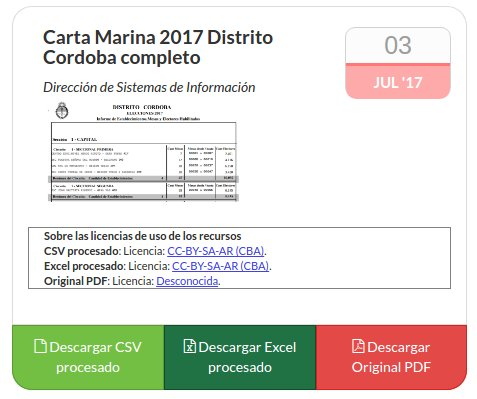
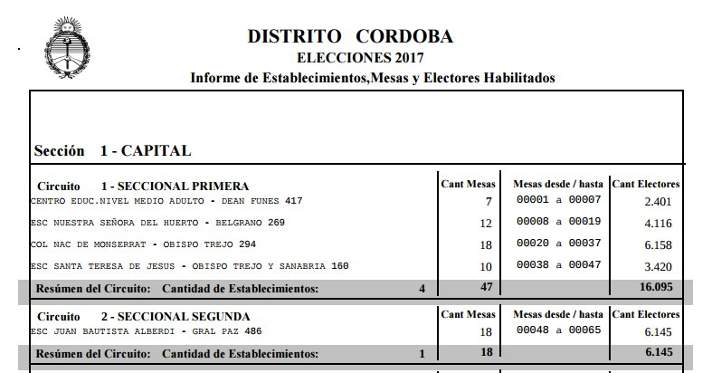
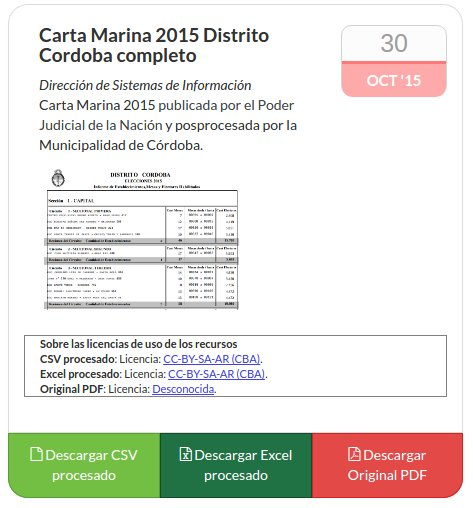
Con este dato se puede hacer análisis de movimientos de electores y extraer conclusiones interesantes. También un partido político puede planificar su despliegue de fiscales el día de la elección.
Como mapa de referencia se dejaron disponibles los polígonos de los departamentos de Córdoba. Se tomó como referencia el archivo SHP (complejo para reutilizar si no te dedicás a cartografía o similares) que libera el Gobierno de Córdoba.
Lo pasamos a KML + CSV-WKT + Mapa Online interactivo, formatos mucho más fáciles de utilizar para periodistas e investigadores.
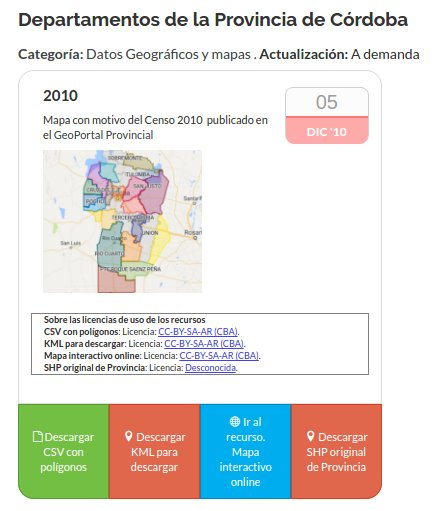
Además se dejaron disponibles los polígonos de los circuitos electorales de la Ciudad de Córdoba gracias al Catastro de la Municipalidad. Se usaron formatos simples y aptos para todo público. Se publicaron versión 2011 y 2013-2017 en KML, CSV+WKT y mapa online.
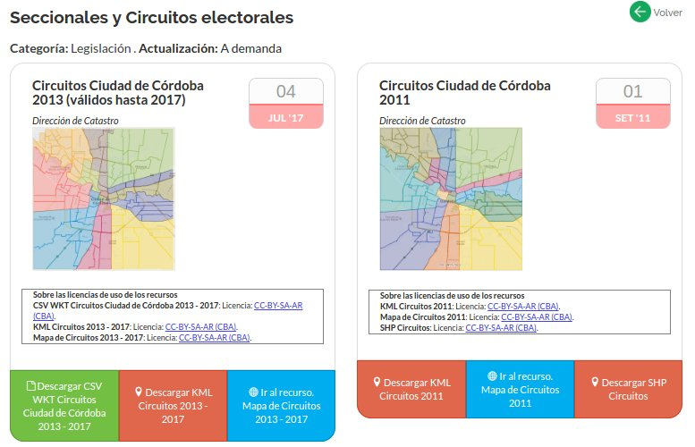
Con estos datos se hicieron estudios sobre variaciones de electores 2015–2017 por departamento y por circuitos.
https://gobiernoabierto.cordoba.gob.ar/data/datos-abiertos/categoria/sociedad/movimientos-poblacionales/215
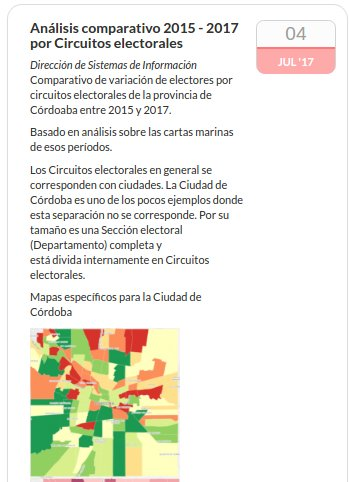
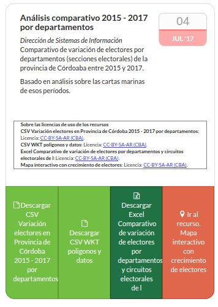
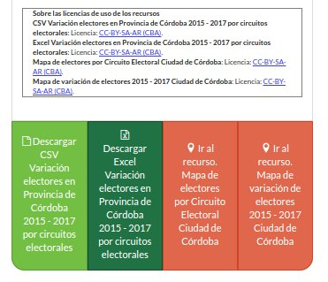
Como agregado puede verse un mapa (a revisar) de las escuelas de Córdoba:
https://hudson.carto.com/builder/830a70f8-82b0-4834-8410-81d0ebc44064/
Esperamos con todo esto que mucha más gente pueda beneficiarse de estos datos, que sean más accesibles más allá de las audiencias habituales.
Todo esto queda compilado y disponible en el blog de OpenDataCba a modo de resumen:
http://blog.opendatacordoba.org/demografia-con-cartas-marinas/
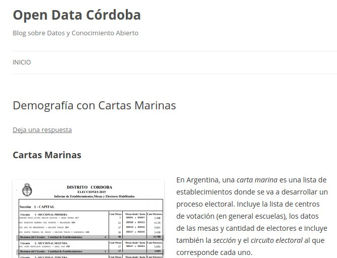
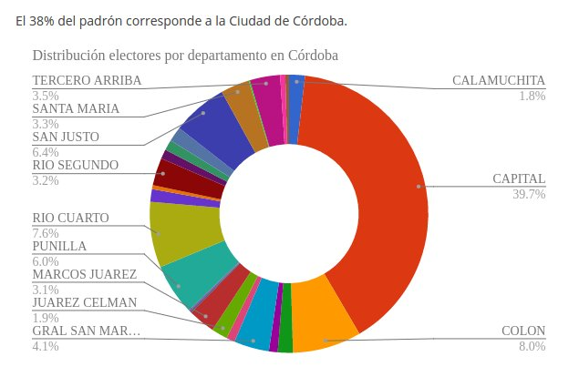
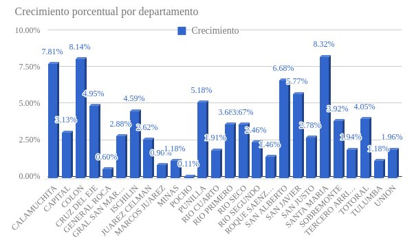
Hay links a todos los datos, repositorios de código y visualizaciones para sacar mejor provecho de los datos.
¿Qué sigue?
Se pueden tomar estos datos para atrás. Encontré hasta 2007 (me gustaría que me pasen más). Dicen mucho de esta Provincia.
La Ciudad de Córdoba viene perdiendo peso relativo en la provincia desde al menos 10 años. Pesaba 40,09% y ahora es 38,46%. La tendencia es clara.
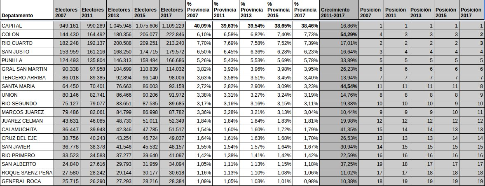
Explosivo crecimiento de Colón: pasa del cuarto al segundo puesto. Crece el 54%, el triple que la Ciudad en 10 años.

Y mirá lo que pasa en circuitos electorales grandes (+10.000 electores) fuera de la Capital. Mendiolaza: +178% en 10 años.
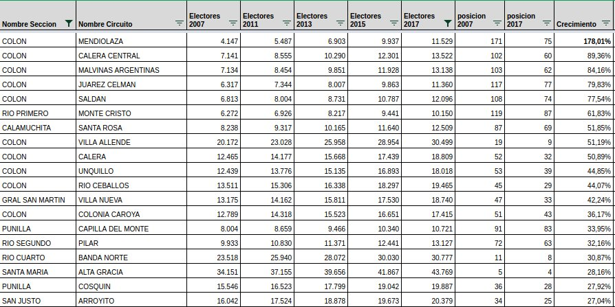
 Teniendo el primer proyecto terminado el segundo es más fácil.
Simplemente replique la aplicación y conecte el stream que la radio ya tiene y publica en su web. Quedó tambien como software libre. [VER REPOSITORIO]
Teniendo el primer proyecto terminado el segundo es más fácil.
Simplemente replique la aplicación y conecte el stream que la radio ya tiene y publica en su web. Quedó tambien como software libre. [VER REPOSITORIO]